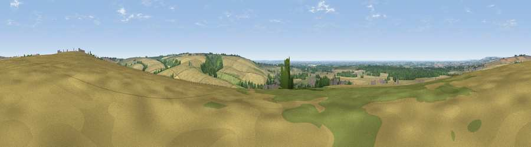

Viewpoint near North Newbald
#15420 in England · top 29% of its area beats it · near North NewbaldWhere it is
The exact computed spot (SE 91375 37525). Click the marker for map links.
The view, rendered

A 360° render of this exact spot computed from the terrain model, tree cover and land cover — summer colours, afternoon light, calibrated against photographs of famous viewpoints. Real trees, hedges and buildings will differ in detail.
The panorama
Grey silhouette: terrain skyline in each direction (720 bearings, Earth curvature and refraction included). Dashed green: skyline with trees (+15 m) and buildings (+8 m) as obstacles. Blue strip: how far the ground is visible on each bearing.
Where the view opens
Wedge length = distance to the farthest visible ground on that bearing (vegetation-aware). Rings at 10, 25 and 50 km.
What fills the view
65% cropland · 18% grassland · 14% woodland · 3% built-up
Angular shares of the visible panorama (visual magnitude), not map area. Landscape diversity 0.43 (0–1 Shannon).
Key numbers
More beautiful places nearby
The staircase of upgrades: each row has a higher view potential than everything closer. Driving times are estimates from straight-line distance, calibrated against real road routing — check an actual route before setting out.
| Place | Direction | Drive | Score |
|---|---|---|---|
| Viewpoint near South Newbald | SSE · 2 km | ~5 min | 59.4 |
| Viewpoint near South Newbald | SSE · 4 km | ~9 min | 64.9 |
| Viewpoint near Nunburnholme | NNW · 11 km | ~21 min | 68.5 |
| Viewpoint near Millington | NNW · 19 km | ~32 min | 69.7 |
| Viewpoint near Bishop Wilton | NNW · 21 km | ~35 min | 71.5 |
| Garrowby Hill (A166 crest) | NNW · 22 km | ~36 min | 71.9 |
| Viewpoint near Acklam | NNW · 26 km | ~42 min | 73.8 |
| Beacon Hill | NNE · 44 km | ~64 min | 79.1 |
53.82597, -0.61328 · source: screening · position refined by local search. Computed location — check access rights before visiting.